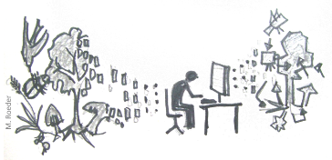

Cluster processes / Mark correlation function / Heterogenous conditions
Wiegand, Getzin, Hesselbarth
Summer semester 2020

As always, we load all needed packages.
library(spatstat)
library(tidyverse)Cluster process
Exercise 1
Task: Perform a point-pattern analysis on the Hemlock_Adults_vs_SmallSaps.txt data set using ‘CSR’ as null model. We are now especially interested in pattern 2, the small saplings. Using a cell size of 1 meter, calculate the O22(r). Up to which scale do we find significant clustering of the saplings?
We import the data first and convert it as ppp. Also, we reclassify the marks as 1 == ‘adults’ and 2 == ‘saplings’.
hemlock <- read_delim(file = "Data/Hemlock_Adults_vs_SmallSaps.txt",
delim = ";")
hemlock <- mutate(hemlock,
mark = case_when(mark == 1 ~ "adults",
mark == 2 ~ "saplings"),
mark = as.factor(mark))
plot_area <- ripras(x = hemlock$x, y = hemlock$y, shape = "rectangle")
hemlock_ppp <- as.ppp(X = hemlock, W = plot_area)
summary(hemlock_ppp)
## Marked planar point pattern: 427 points
## Average intensity 0.06190762 points per square unit
##
## Coordinates are given to 2 decimal places
## i.e. rounded to the nearest multiple of 0.01 units
##
## Multitype:
## frequency proportion intensity
## adults 234 0.5480094 0.03392596
## saplings 193 0.4519906 0.02798167
##
## Window: rectangle = [1.22493, 80.43507] x [-1.64345, 85.43345] units
## (79.21 x 87.08 units)
## Window area = 6897.37 square unitsThen, we implement the O-ring statistic.
Oest <- function(input, r = NULL,
correction = "Ripley", divisor = "d", ...){
p_fct <- pcf(input, r = r,
correction = correction,
divisor = divisor)
lambda <- intensity(unmark(input))
eval.fv(p_fct*lambda)
}We are just interested in the saplings, therefore we subset them first. Then we calculate the O-ring statistic with simulation envelopes and ‘CSR’ as null model.
saplings <- subset.ppp(hemlock_ppp, marks == "saplings", drop = TRUE)
o_ring_saplings <- envelope(saplings, fun = Oest,
r = seq(from = 0, to = 45, by = 0.5),
nsim = 199, nrank = 5)
Exercise 2
Task: Use the pair-correlation function to fit a cluster process to the data and use the fitted model to simulate null model data
We use the function kkpm() to fit a cluster point process model. We need to provide the point pattern (X, here we need to remove all marks with unmark() because subset.ppp() only drops all unused levels, but does not remove all marks). We specify the cluster type we want to fit (cluster) and which summary function to use (pcf). Then, we simulate patterns using the fitted process with simulate.kppm(). We need to provide the model (object) and the number of simulations (nsim). The result is a list of simulated patterns.
thomas_process <- kppm(X = unmark(saplings), clusters = "Thomas",
statistic = "pcf")
simulated_pattern <- simulate.kppm(object = thomas_process, nsim = 199)Now, we can compute the envelopes of the null model and compare it to the observed data.
o22_saplings_thomas <- envelope(saplings, fun = Oest,
r = seq(from = 0, to = 45, by = 0.5),
nsim = 199, nrank = 5,
simulate = simulated_pattern)
Exercise 3
Task: If the function of the observed data falls into the new envelope, you fitted good parameters for the cluster process. You can review them by inspecting the object. Here, the typical cluster size and number of parents are given.
kappa is the intensity of cluster centers. In order to get the ‘number of parents’, we need to multiply the number with the area of the observation window (remember: the intensity is the number per unit area). Luckily, spatstat contains a function (area()) to calculate the area. The scale parameter gives the standard deviation of random displacement of a point from its cluster center. To calculate the area of a cluster, we need to calculate the area of the according ‘circle’. The Mean cluster size gives exactly what it says.
print(thomas_process)
## Stationary cluster point process model
## Fitted to point pattern dataset 'unmark(saplings)'
## Fitted by minimum contrast
## Summary statistic: pair correlation function
##
## Uniform intensity: 0.02798167
##
## Cluster model: Thomas process
## Fitted cluster parameters:
## kappa scale
## 0.0007933329 2.9586691460
## Mean cluster size: 35.27102 points## [1] "Number of parents: 5.47"
## [1] "Cluster area: 27.5"Mark correlation function (Stoyan’s \(k_{mm}\))
Exercise 1
Task: The data set Alive_DouglasFir_OGN.txt contains the location and stem diameters (diameter at breast height, DBH) for all living Douglas fir trees in the Old-growth North plot. Calculate the mark correlation function. What do these results suggest?
First, we need to import the data, convert them as ppp object and have a look at the data. This time, the marks are continuous, i.e. the diameter at breast height in cm of each tree. Therefore, the summary() function automatically gives the mean, median and quantiles of the data. Also, the plot automatically scales the point according to their size.
douglas_fir <- read_delim(file = "Data/Alive_DouglasFir_OGN.txt",
delim = ";")
plot_area <- ripras(x = douglas_fir$x, y = douglas_fir$y,
shape = "rectangle")
douglas_fir_ppp <- as.ppp(X = douglas_fir, W = plot_area)
summary(douglas_fir_ppp)
## Marked planar point pattern: 335 points
## Average intensity 0.03662751 points per square unit
##
## Coordinates are given to 2 decimal places
## i.e. rounded to the nearest multiple of 0.01 units
##
## marks are numeric, of type 'double'
## Summary:
## Min. 1st Qu. Median Mean 3rd Qu. Max.
## 1.90 35.60 48.80 46.05 57.90 99.00
##
## Window: rectangle = [-0.28027, 103.97027] x [0.04889, 87.78111] units
## (104.3 x 87.73 units)
## Window area = 9146.13 square unitsThe mark-correlation function can be calculated with markcorr(). This is very straightforward.
mark_corrlation_douglas_fir <- markcorr(X = douglas_fir_ppp,
r = seq(from = 0, to = 45,
by = 0.5),
correction = "Ripley")
Exercise 2
Task: Check Calculate simulation envelopes to test for significance. What could be a possible ecological explanation of your results?
We use envelope() to calculate the simulation envelopes. As null model, we use random labeling, shuffling only the marks but not the points (simulate argument using rlabel()).
envelopes_mark_correlation_alive <- envelope(Y = douglas_fir_ppp,
fun = markcorr,
r = seq(from = 0, to = 45,
by = 0.5),
nsim = 199, nrank = 5,
simulate = expression(rlabel(douglas_fir_ppp)))
Inhomogeneous point patterns
Exercise 1
Task: In the data set Hemlock_Adults_vs_SmallSaps.txt, you can observe a clear gradient in the density of adult trees. Calculate O11(r) and L11(r) for pattern 1 (adult trees) to see up to which scale clustering of the trees can be observed using ‘CSR’ as null model.
We import the data, classify it and convert it as ppp object. We plot the point pattern of only adult trees and have a look at the summary.
hemlock <- read_delim(file = "Data/Hemlock_Adults_vs_SmallSaps.txt",
delim = ";")
hemlock <- mutate(hemlock,
mark = case_when(mark == 1 ~ "adults",
mark == 2 ~ "saplings"),
mark = as.factor(mark))
plot_area <- ripras(x = hemlock$x, y = hemlock$y,
shape = "rectangle")
hemlock_ppp <- as.ppp(X = hemlock, W = plot_area)
summary(hemlock_ppp)
## Marked planar point pattern: 427 points
## Average intensity 0.06190762 points per square unit
##
## Coordinates are given to 2 decimal places
## i.e. rounded to the nearest multiple of 0.01 units
##
## Multitype:
## frequency proportion intensity
## adults 234 0.5480094 0.03392596
## saplings 193 0.4519906 0.02798167
##
## Window: rectangle = [1.22493, 80.43507] x [-1.64345, 85.43345] units
## (79.21 x 87.08 units)
## Window area = 6897.37 square units
Also, we need to implement the O-ring statistic as before.
Oest <- function(input,r = NULL,
correction = "Ripley", divisor = "d", ...){
p_fct <- pcf(input, r = r,
correction = correction, divisor = divisor, ...)
lambda <- intensity(unmark(input))
eval.fv(p_fct*lambda)
}We calculate the O-ring statistic for the adult trees only, using envelope() and the null model of ‘CSR’.
adults <- subset.ppp(hemlock_ppp, marks == "adults", drop = TRUE)
envelopes_adults_homo <- envelope(Y = adults, fun = Oest,
r = seq(from = 0, to = 45, by = 0.5),
nsim = 199, rank = 5)
Exercise 2
Task: Getzin et al. (2008) show that the study area is heterogeneous. We are going to account for this heterogeneity by fitting a heterogeneous Poisson processes.
Firstly, we need to get the intensity \(\lambda(xy)\) at every point of the observation window. The result is a im (pixel image) object.
lambda_xy <- density(x = adults)
class(lambda_xy)
## [1] "im"Now, we can simulate heterogeneous point patterns following the intensity of the pattern. Therefore, we use rpoispp() and specify the argument lambda with the created im object. Also, we specify the number of simulated patterns (nsim). The result is a list with heterogeneous point patterns. If you plot one realization of the simulated data, you can see how the random points ‘follow’ the intensity.
simulated_heterogenous_pattern <- rpoispp(lambda = lambda_xy, nsim = 199)
Now, we can use the simulated point patterns as input for envelope() to create simulation envelopes with the null model of a heterogeneous Poisson process.
envelopes_adults_hetero <- envelope(Y = adults, fun = Oest,
r = seq(from = 0, to = 45,
by = 0.5),
nsim = 199, rank = 5,
simulate = simulated_heterogenous_pattern)
There is a wrapper around these function in onpoint to simulate a heterogenous Poisson process as null model (see ?simulate_heterogenous_pattern).
Alternativly, spatstat can calculated the inhomogenous pair-correlation function and consider the heterogneous plot conditions while estimating the pair-correlation function.
envelopes_adults_inhomo <- envelope(Y = adults, fun = pcfinhom,
divisor = "d",
correction = "Ripley",
r = seq(from = 0, to = 45, by = 0.5),
nsim = 199, rank = 5)
References:
Baddeley, A., Rubak, E., Turner, R., 2015. Spatial point patterns: Methodology and applications with R. Chapman and Hall/CRC Press, London.
Getzin, S., Dean, C., He, F., Trofymow, J.A., Wiegand, K., Wiegand, T., 2006. Spatial patterns and competition of tree species in a Douglas fir chronosequence on Vancouver Island. Ecography, 29, 671-682.
Getzin, S., Wiegand, T., Wiegand, K., He, F., 2008. Heterogeneity influences spatial patterns and demographics in forest stands. J. Ecol. 96, 807-820.